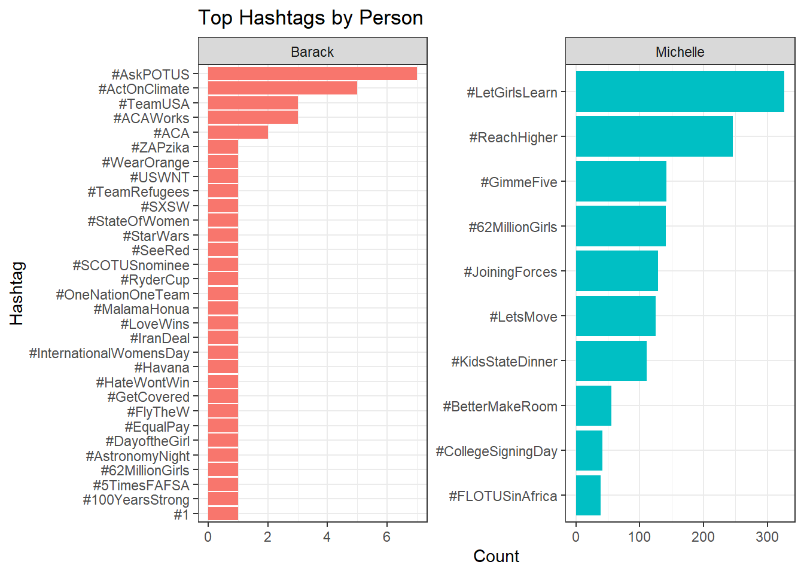
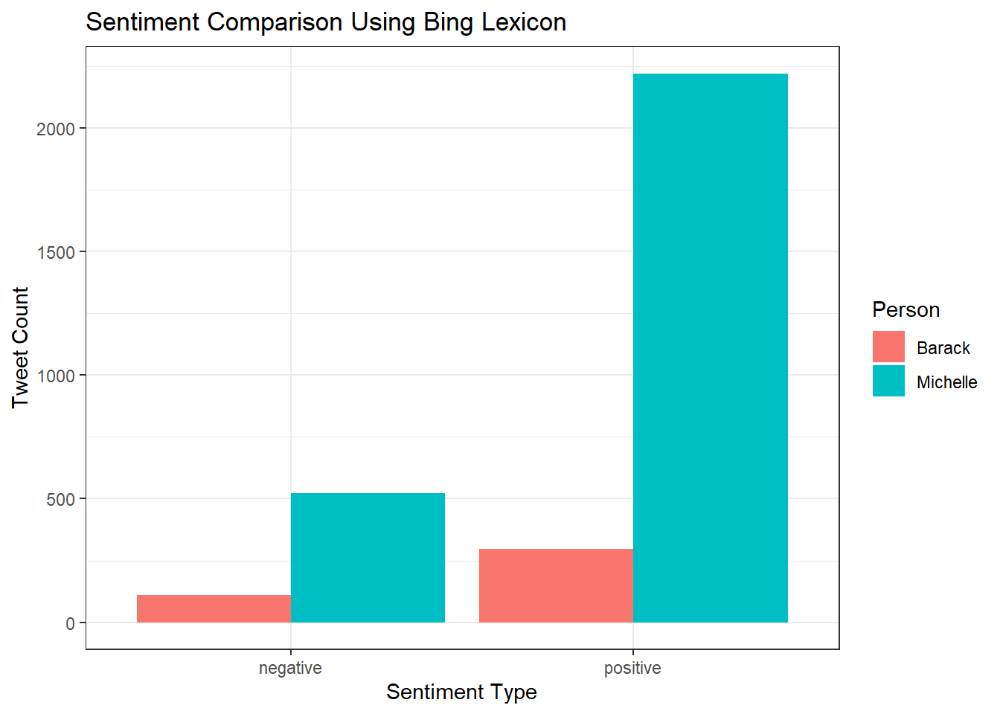
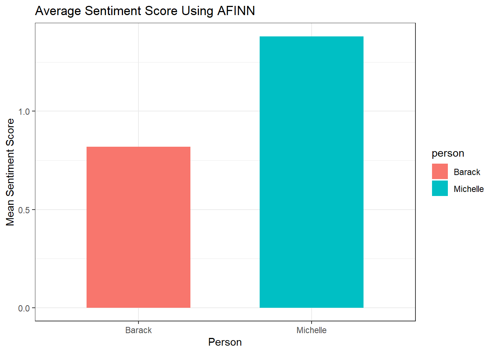
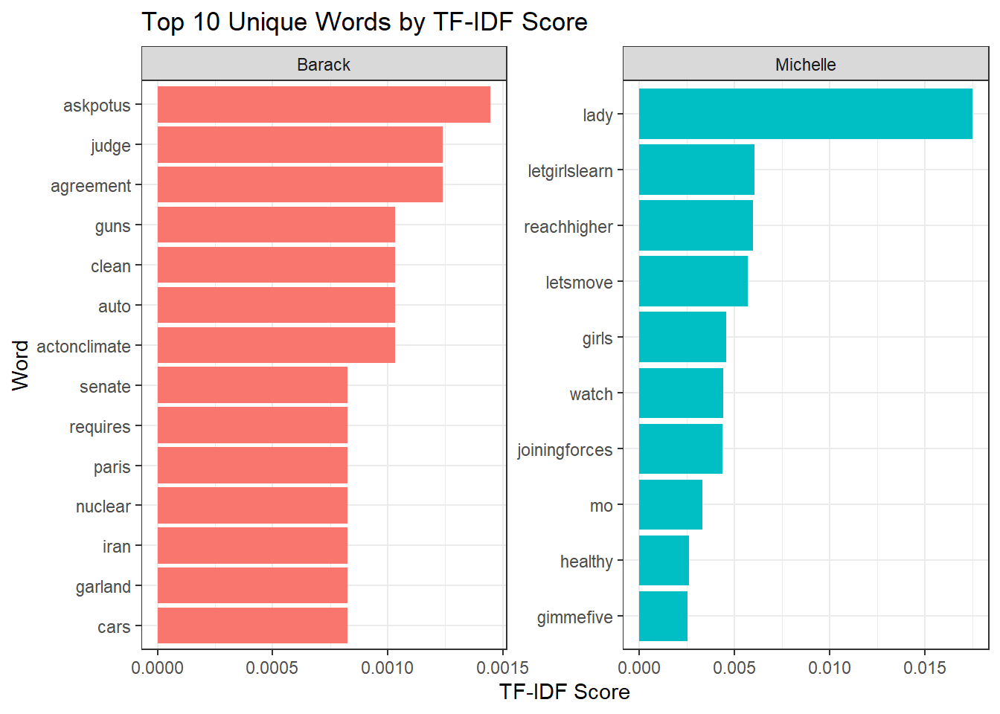

In this project, I analyze a dataset of tweets from President Barack Obama and First Lady Michelle Obama to explore differences in linguistic style, emotional tone, and public messaging. By comparing their language on social media, we gain insight into how each leader used Twitter to shape their public image and connect with different audiences.
Dataset and Preprocessing
To begin the analysis, I combined the tweets from Barack and Michelle Obama into a single dataset. I added a person column to distinguish between authors and formatted the timestamps using ymd_hms() to ensure consistency across records. Cleaning and unifying the dataset was a crucial first step, enabling direct comparisons of tone, topics, and communication strategies between the two figures over time.
Hide Code
library(tidyverse)library(lubridate)# Load and label tweets from Barack and Michelle Obamabarack <-read_csv("https://joeroith.github.io/264_spring_2025/Data/tweets_potus.csv")michelle <-read_csv("https://joeroith.github.io/264_spring_2025/Data/tweets_flotus.csv")# Combine datasets and format timestamp for easier analysistweets <-bind_rows( barack |>mutate(person ="Barack"), michelle |>mutate(person ="Michelle")) |>mutate(timestamp =ymd_hms(timestamp))
String Functions and Regular Expressions
With the dataset prepared, the next step was to extract meaningful features from the tweet text. I used str_detect() to identify the presence of mentions and keywords (such as “hope”), str_extract() to pull out the first hashtag from each tweet, and str_count() to quantify emotional punctuation like exclamation marks. Regular expressions like @\w+, #\w+, and \b(hope|change|love|America)\b were applied to locate specific patterns that signify engagement, branding, and emotional appeals. By transforming the raw text into structured variables, these operations create a foundation for analyzing differences in tone, topic focus, and communication style between Barack and Michelle.
Hide Code
# Extract features related to mentions, hashtags, emotion, and themestweets <- tweets |>mutate(has_mention =str_detect(text, "@\\w+"), # Detect if the tweet mentions another userhashtag =str_extract(text, "#\\w+"), # Extract the first hashtag from the tweetnum_exclaims =str_count(text, "!"), # Count the number of exclamation markshas_hope_theme =str_detect(text, regex("\\b(hope|change|love|America)\\b", ignore_case =TRUE)) # Flag tweets with key Obama-era themes )
has_mention: Indicates whether the tweet directly mentions another account, highlighting engagement strategies.
hashtag: Captures the first hashtag used, providing insight into trending topics and campaign branding.
num_exclaims: Measures the level of expressiveness or emphasis in each tweet.
has_hope_theme: Flags tweets related to signature Obama-era themes like “hope” and “change,” useful for thematic analysis.
Text Analysis Applications
With these structured features extracted from the tweets, I then moved into deeper text analysis. By applying sentiment analysis and vocabulary modeling techniques, I aimed to uncover broader emotional trends and distinctive themes that defined Barack and Michelle Obama’s communication styles.
1. Sentiment Analysis (bing + afinn)
After extracting key structural features from the tweets, the next step was to examine their emotional content. To do this, I tokenized each tweet into individual words using unnest_tokens(), removed common stopwords, and joined the words with two different sentiment lexicons: Bing and AFINN. The Bing lexicon classifies words as positive or negative, allowing me to compare the frequency of positive versus negative language between Barack and Michelle. The AFINN lexicon assigns a numeric sentiment score to each word, enabling a calculation of the average sentiment for each person’s tweets. Together, these measures reveal important differences in emotional tone and public messaging between the two figures.
Hide Code
library(tidytext)# Load sentiment lexiconsbing_sentiments <-get_sentiments("bing")afinn_sentiments <-get_sentiments("afinn")# Tokenize tweets into words and remove stopwordstweet_words <- tweets |>unnest_tokens(word, text) |>anti_join(stop_words)# Join with Bing sentiment lexicon and count positive/negative words for each personbing_sentiment <- tweet_words |>inner_join(bing_sentiments) |>count(person, sentiment) |>pivot_wider(names_from = sentiment, values_from = n)# Join with AFINN lexicon and calculate mean sentiment score for each personafinn_scores <- tweet_words |>inner_join(afinn_sentiments) |>group_by(person) |>summarize(mean_sentiment =mean(value, na.rm =TRUE))
2. TF-IDF for Unique Vocabulary
While sentiment analysis highlights the overall emotional tone of the tweets, it is also important to understand the specific vocabulary each person used to shape their public messaging. To do this, I used Term Frequency–Inverse Document Frequency (TF-IDF) analysis, which identifies words that are particularly important to one person’s tweets relative to the other’s. First, I counted how often each word appears for each speaker using count(person, word). Then, bind_tf_idf() calculated the importance of each word based on its frequency in one set of tweets and rarity across both. Finally, arrange(desc(tf_idf)) ranked the words by their uniqueness. This approach brings out the distinctive themes that defined Barack’s and Michelle’s communication styles, for example, words like “lady” ranking highly for Michelle and “agreement” for Barack.
Hide Code
# Calculate TF-IDF scores to find words uniquely important to each persontf_idf <- tweet_words |>count(person, word) |>bind_tf_idf(word, person, n) |>arrange(desc(tf_idf))
tf (Term Frequency): The proportion of tweets by that person that include the word. For instance, “lady” appears in about 2.5% of Michelle’s tweets.
idf (Inverse Document Frequency): Reflects how unique the word is across both speakers. Words appearing in both people’s tweets have lower idf scores, while unique words have higher scores.
tf_idf: The final product of tf and idf, highlighting words that are both frequent and distinctive for one person.
By focusing on uniquely weighted vocabulary, this analysis offers a deeper look at the messaging priorities that each speaker emphasized.
3. Word Cloud
While TF-IDF analysis highlights distinctive words based on uniqueness, word clouds offer a more intuitive, visual way to explore common language patterns. Larger words in a word cloud represent higher frequencies, making it easy to spot dominant themes at a glance. In this project, creating separate word clouds for Barack and Michelle Obama helps quickly illustrate the major topics and initiatives each emphasized on Twitter. Together with the numeric summaries, the word clouds offer a complementary perspective, reinforcing the communication priorities already suggested by the TF-IDF results.
Hide Code
library(wordcloud)# Prepare the cleaned word countscleaned_words <- tweet_words |>filter(!str_detect(word, "^(t\\.co|https?|amp|rt)$"), # Remove t.co, https, amp, rt!word %in% stop_words$word, # Remove English stopwordsstr_detect(word, "^[a-zA-Z]+$") # Keep only alphabetic words ) |>count(person, word, sort =TRUE)# Wordcloud for Barack Obamaword_counts_barack <- cleaned_words |>filter(person =="Barack")set.seed(123)wordcloud(words = word_counts_barack$word,freq = word_counts_barack$n,max.words =80,colors ="blue",random.order =FALSE)
The word clouds visually highlight key differences in the focus of Barack and Michelle Obama’s tweets. Barack’s most frequent words center around national identity, policy, and public engagement, with terms like “American,” “people,” “health,” and “climate.” In contrast, Michelle’s language emphasizes education, youth programs, and community initiatives, with frequent words like “lady,” “flotus,” “letgirlslearn,” and “education.” These patterns reinforce the broader public roles and signature causes championed by each figure.
Plots & Tables
To further explore the differences in tone, vocabulary, and communication focus between Barack and Michelle Obama, I created a series of plots. These visualizations help highlight key patterns uncovered through the earlier text analysis and offer a clearer comparison of their messaging styles over time.
Plot 1: Hashtag usage by person
Building on the earlier text analysis, I next examined hashtag usage to further uncover major themes in Barack and Michelle Obama’s tweets. Hashtags serve as important markers of key initiatives, movements, and topics each speaker emphasized. This visualization plots the most common hashtags used by each person, using reorder_within() and facet_wrap() to cleanly separate and compare their top hashtag topics. By looking at the hashtags, we gain a snapshot of the primary causes and campaigns each figure prioritized.
Hide Code
# Count top hashtags for each persontweets |>count(person, hashtag, sort =TRUE) |>filter(!is.na(hashtag)) |>group_by(person) |>slice_max(n, n =10) |># Create separate bar plots for Barack and Michelle's top hashtagsggplot(aes(x =reorder_within(hashtag, n, person), y = n, fill = person)) +geom_col(show.legend =FALSE) +facet_wrap(~person, scales ="free") +scale_x_reordered() +coord_flip() +labs(title ="Top Hashtags by Person",x ="Hashtag",y ="Count" ) +theme_bw()

This plot shows that Barack Obama’s most frequent hashtags, like #AskPOTUS and #ActOnClimate, highlight political engagement and climate initiatives. In contrast, Michelle Obama’s top hashtags, such as #LetGirlsLearn and #ReachHigher, emphasize education, youth development, and health. These patterns reinforce the broader focus seen across their tweets, with Barack centering on national and global policy, and Michelle championing social initiatives and community empowerment.
Plot 2: Sentiment Comparison (bing)
While hashtag usage reveals the major topics emphasized by each figure, examining sentiment provides insight into the emotional tone that framed their communication. To explore this, I compared the counts of positive and negative words in Barack and Michelle Obama’s tweets using the Bing sentiment lexicon. This bar chart visualizes how the emotional polarity of their tweets varies, adding depth to the earlier text-based findings about their public messaging styles.
Hide Code
# Pivot to long formatbing_long <- bing_sentiment |>pivot_longer(cols =c(positive, negative),names_to ="sentiment",values_to ="count")# Plotggplot(bing_long, aes(x = sentiment, y = count, fill = person)) +geom_col(position ="dodge") +labs(title ="Sentiment Comparison Using Bing Lexicon",x ="Sentiment Type",y ="Tweet Count",fill ="Person" ) +theme_bw()

This plot shows that both Barack and Michelle Obama tweeted more positively than negatively overall. However, Michelle had a much higher number of both positive and negative tweets, reflecting her greater overall tweet volume. Her tweets also display a stronger emphasis on positive language compared to Barack’s, reinforcing the optimistic tone identified earlier in the word cloud and hashtag analyses.
Plot 3: AFINN Average Sentiment
After comparing the overall counts of positive and negative words using the Bing lexicon, I next turned to the AFINN lexicon to capture a more nuanced, numeric measure of sentiment. The AFINN scores assign sentiment values to individual words, allowing for a direct comparison of the average emotional tone in Barack and Michelle Obama’s tweets. This plot adds a quantitative perspective to the earlier findings and reinforces broader differences in mood and messaging style.
Hide Code
# Plotggplot(afinn_scores, aes(x = person, y = mean_sentiment, fill = person)) +geom_col(width =0.6) +labs(title ="Average Sentiment Score Using AFINN",x ="Person",y ="Mean Sentiment Score" ) +theme_bw()

The results show that Michelle Obama’s tweets have a noticeably higher mean sentiment score, suggesting a more consistently positive tone. In contrast, Barack Obama’s tweets appear slightly more neutral or reserved. These findings align with the earlier sentiment counts and continue to illustrate differences in how each figure crafted their public messaging on Twitter.
PLot 4: Top 10 unique words for each person
While sentiment analysis reveals differences in emotional tone, examining distinctive vocabulary offers deeper insight into the specific issues each figure prioritized. To highlight words uniquely associated with Barack and Michelle Obama, I used TF-IDF analysis. This method emphasizes words that are common in one person’s tweets but rare across both datasets. Plotting the top 10 highest TF-IDF words for each person reveals the distinct themes and initiatives that shaped their messaging.
Hide Code
# Get the top 10 words for each person based on tf-idf scoretop_tf_idf <- tf_idf |>group_by(person) |>slice_max(tf_idf, n =10) |>ungroup()# Plotggplot(top_tf_idf, aes(x = tf_idf, y =fct_reorder(word, tf_idf), fill = person)) +geom_col(show.legend =FALSE) +facet_wrap(~person, scales ="free") +labs(title ="Top 10 Unique Words by TF-IDF Score",x ="TF-IDF Score",y ="Word" ) +theme_bw()

The TF-IDF plot shows that Barack Obama’s most distinctive words include “askpotus,” “agreement,” “guns,” and “actonclimate,” highlighting a strong focus on political engagement, policy discussions, and climate initiatives. In contrast, Michelle Obama’s top words such as “lady,” “letgirlslearn,” “reachhigher,” and “letsmove” reflect her emphasis on education, youth empowerment, and health campaigns. These differences align closely with earlier findings from the sentiment and hashtag analyses, reinforcing how each leader strategically used language to promote their public roles and signature causes.
Conclusion
This analysis highlights distinct differences in how Barack and Michelle Obama used Twitter to engage with the public. Barack’s tweets often focused on civic engagement, policy issues, and national identity, reflecting his role as a political leader addressing broad governance challenges. Michelle’s messaging, in contrast, centered on education, youth empowerment, and community initiatives, aligning with her efforts to inspire and support everyday citizens. Sentiment analysis revealed Michelle’s consistently more positive tone, while vocabulary and hashtag patterns reinforced their distinct areas of focus. Together, these insights show how each figure strategically adapted their communication style to promote their signature causes and connect authentically with their audiences.
One really cool insight I gained: Michelle Obama’s tweets are not only more positive on average (sentiment analysis) but also center much more heavily around social causes and youth initiatives (TF-IDF and hashtag analysis), whereas Barack’s tweets show a blend of national policy engagement and broader civic identity messaging.
This was super interesting because:
Michelle’s positivity wasn’t just random — it matched her focus on education, empowerment, and optimism.
Barack’s more neutral tone makes sense because presidential messaging has to balance many audiences and avoid emotional extremes.
Hashtags reinforce this too: Barack is focused on national conversations (#ActOnClimate, #POTUS), while Michelle pushes specific programs (#LetGirlsLearn, #ReachHigher).
Source Code
---format: html: theme: cosmo toc: true toc-location: right page-layout: full css: styles.csseditor_options: chunk_output_type: console---<div style="text-align: left;"># Text Analysis#### Author: Tenzin GyaltsenIn this project, I analyze a dataset of tweets from President Barack Obama and First Lady Michelle Obama to explore differences in linguistic style, emotional tone, and public messaging. By comparing their language on social media, we gain insight into how each leader used Twitter to shape their public image and connect with different audiences. ## Dataset and PreprocessingTo begin the analysis, I combined the tweets from Barack and Michelle Obama into a single dataset. I added a person column to distinguish between authors and formatted the timestamps using ymd_hms() to ensure consistency across records. Cleaning and unifying the dataset was a crucial first step, enabling direct comparisons of tone, topics, and communication strategies between the two figures over time. ```{r}#| echo: true#| message: false#| warning: falselibrary(tidyverse)library(lubridate)# Load and label tweets from Barack and Michelle Obamabarack <-read_csv("https://joeroith.github.io/264_spring_2025/Data/tweets_potus.csv")michelle <-read_csv("https://joeroith.github.io/264_spring_2025/Data/tweets_flotus.csv")# Combine datasets and format timestamp for easier analysistweets <-bind_rows( barack |>mutate(person ="Barack"), michelle |>mutate(person ="Michelle")) |>mutate(timestamp =ymd_hms(timestamp))```## String Functions and Regular ExpressionsWith the dataset prepared, the next step was to extract meaningful features from the tweet text. I used str_detect() to identify the presence of mentions and keywords (such as “hope”), str_extract() to pull out the first hashtag from each tweet, and str_count() to quantify emotional punctuation like exclamation marks. Regular expressions like @\\w+, #\\w+, and \\b(hope|change|love|America)\\b were applied to locate specific patterns that signify engagement, branding, and emotional appeals. By transforming the raw text into structured variables, these operations create a foundation for analyzing differences in tone, topic focus, and communication style between Barack and Michelle. ```{r}#| echo: true#| message: false#| warning: false# Extract features related to mentions, hashtags, emotion, and themestweets <- tweets |>mutate(has_mention =str_detect(text, "@\\w+"), # Detect if the tweet mentions another userhashtag =str_extract(text, "#\\w+"), # Extract the first hashtag from the tweetnum_exclaims =str_count(text, "!"), # Count the number of exclamation markshas_hope_theme =str_detect(text, regex("\\b(hope|change|love|America)\\b", ignore_case =TRUE)) # Flag tweets with key Obama-era themes )```- has_mention: Indicates whether the tweet directly mentions another account, highlighting engagement strategies.- hashtag: Captures the first hashtag used, providing insight into trending topics and campaign branding.- num_exclaims: Measures the level of expressiveness or emphasis in each tweet.- has_hope_theme: Flags tweets related to signature Obama-era themes like “hope” and “change,” useful for thematic analysis.## Text Analysis ApplicationsWith these structured features extracted from the tweets, I then moved into deeper text analysis. By applying sentiment analysis and vocabulary modeling techniques, I aimed to uncover broader emotional trends and distinctive themes that defined Barack and Michelle Obama's communication styles. ### 1. Sentiment Analysis (bing + afinn)After extracting key structural features from the tweets, the next step was to examine their emotional content. To do this, I tokenized each tweet into individual words using unnest_tokens(), removed common stopwords, and joined the words with two different sentiment lexicons: Bing and AFINN. The Bing lexicon classifies words as positive or negative, allowing me to compare the frequency of positive versus negative language between Barack and Michelle. The AFINN lexicon assigns a numeric sentiment score to each word, enabling a calculation of the average sentiment for each person’s tweets. Together, these measures reveal important differences in emotional tone and public messaging between the two figures.```{r}#| echo: true#| message: false#| warning: falselibrary(tidytext)# Load sentiment lexiconsbing_sentiments <-get_sentiments("bing")afinn_sentiments <-get_sentiments("afinn")# Tokenize tweets into words and remove stopwordstweet_words <- tweets |>unnest_tokens(word, text) |>anti_join(stop_words)# Join with Bing sentiment lexicon and count positive/negative words for each personbing_sentiment <- tweet_words |>inner_join(bing_sentiments) |>count(person, sentiment) |>pivot_wider(names_from = sentiment, values_from = n)# Join with AFINN lexicon and calculate mean sentiment score for each personafinn_scores <- tweet_words |>inner_join(afinn_sentiments) |>group_by(person) |>summarize(mean_sentiment =mean(value, na.rm =TRUE))```### 2. TF-IDF for Unique VocabularyWhile sentiment analysis highlights the overall emotional tone of the tweets, it is also important to understand the specific vocabulary each person used to shape their public messaging. To do this, I used Term Frequency–Inverse Document Frequency (TF-IDF) analysis, which identifies words that are particularly important to one person's tweets relative to the other’s. First, I counted how often each word appears for each speaker using count(person, word). Then, bind_tf_idf() calculated the importance of each word based on its frequency in one set of tweets and rarity across both. Finally, arrange(desc(tf_idf)) ranked the words by their uniqueness. This approach brings out the distinctive themes that defined Barack’s and Michelle’s communication styles, for example, words like "lady" ranking highly for Michelle and "agreement" for Barack.```{r}#| echo: true#| message: false#| warning: false# Calculate TF-IDF scores to find words uniquely important to each persontf_idf <- tweet_words |>count(person, word) |>bind_tf_idf(word, person, n) |>arrange(desc(tf_idf))```- tf (Term Frequency): The proportion of tweets by that person that include the word. For instance, "lady" appears in about 2.5% of Michelle's tweets.- idf (Inverse Document Frequency): Reflects how unique the word is across both speakers. Words appearing in both people’s tweets have lower idf scores, while unique words have higher scores.- tf_idf: The final product of tf and idf, highlighting words that are both frequent and distinctive for one person.By focusing on uniquely weighted vocabulary, this analysis offers a deeper look at the messaging priorities that each speaker emphasized.### 3. Word CloudWhile TF-IDF analysis highlights distinctive words based on uniqueness, word clouds offer a more intuitive, visual way to explore common language patterns. Larger words in a word cloud represent higher frequencies, making it easy to spot dominant themes at a glance. In this project, creating separate word clouds for Barack and Michelle Obama helps quickly illustrate the major topics and initiatives each emphasized on Twitter. Together with the numeric summaries, the word clouds offer a complementary perspective, reinforcing the communication priorities already suggested by the TF-IDF results. ```{r}#| echo: true#| message: false#| warning: falselibrary(wordcloud)# Prepare the cleaned word countscleaned_words <- tweet_words |>filter(!str_detect(word, "^(t\\.co|https?|amp|rt)$"), # Remove t.co, https, amp, rt!word %in% stop_words$word, # Remove English stopwordsstr_detect(word, "^[a-zA-Z]+$") # Keep only alphabetic words ) |>count(person, word, sort =TRUE)# Wordcloud for Barack Obamaword_counts_barack <- cleaned_words |>filter(person =="Barack")set.seed(123)wordcloud(words = word_counts_barack$word,freq = word_counts_barack$n,max.words =80,colors ="blue",random.order =FALSE)# Wordcloud for Michelle Obamaword_counts_michelle <- cleaned_words |>filter(person =="Michelle")set.seed(123)wordcloud(words = word_counts_michelle$word,freq = word_counts_michelle$n,max.words =80,colors ="purple",random.order =FALSE)```The word clouds visually highlight key differences in the focus of Barack and Michelle Obama’s tweets. Barack’s most frequent words center around national identity, policy, and public engagement, with terms like "American," "people," "health," and "climate." In contrast, Michelle’s language emphasizes education, youth programs, and community initiatives, with frequent words like "lady," "flotus," "letgirlslearn," and "education." These patterns reinforce the broader public roles and signature causes championed by each figure. ## Plots & TablesTo further explore the differences in tone, vocabulary, and communication focus between Barack and Michelle Obama, I created a series of plots. These visualizations help highlight key patterns uncovered through the earlier text analysis and offer a clearer comparison of their messaging styles over time. ### Plot 1: Hashtag usage by personBuilding on the earlier text analysis, I next examined hashtag usage to further uncover major themes in Barack and Michelle Obama's tweets. Hashtags serve as important markers of key initiatives, movements, and topics each speaker emphasized. This visualization plots the most common hashtags used by each person, using reorder_within() and facet_wrap() to cleanly separate and compare their top hashtag topics. By looking at the hashtags, we gain a snapshot of the primary causes and campaigns each figure prioritized. ```{r}#| echo: true#| message: false#| warning: false# Count top hashtags for each persontweets |>count(person, hashtag, sort =TRUE) |>filter(!is.na(hashtag)) |>group_by(person) |>slice_max(n, n =10) |># Create separate bar plots for Barack and Michelle's top hashtagsggplot(aes(x =reorder_within(hashtag, n, person), y = n, fill = person)) +geom_col(show.legend =FALSE) +facet_wrap(~person, scales ="free") +scale_x_reordered() +coord_flip() +labs(title ="Top Hashtags by Person",x ="Hashtag",y ="Count" ) +theme_bw()```This plot shows that Barack Obama’s most frequent hashtags, like #AskPOTUS and #ActOnClimate, highlight political engagement and climate initiatives. In contrast, Michelle Obama's top hashtags, such as #LetGirlsLearn and #ReachHigher, emphasize education, youth development, and health. These patterns reinforce the broader focus seen across their tweets, with Barack centering on national and global policy, and Michelle championing social initiatives and community empowerment. ### Plot 2: Sentiment Comparison (bing)While hashtag usage reveals the major topics emphasized by each figure, examining sentiment provides insight into the emotional tone that framed their communication. To explore this, I compared the counts of positive and negative words in Barack and Michelle Obama's tweets using the Bing sentiment lexicon. This bar chart visualizes how the emotional polarity of their tweets varies, adding depth to the earlier text-based findings about their public messaging styles. ```{r}#| echo: true#| message: false#| warning: false# Pivot to long formatbing_long <- bing_sentiment |>pivot_longer(cols =c(positive, negative),names_to ="sentiment",values_to ="count")# Plotggplot(bing_long, aes(x = sentiment, y = count, fill = person)) +geom_col(position ="dodge") +labs(title ="Sentiment Comparison Using Bing Lexicon",x ="Sentiment Type",y ="Tweet Count",fill ="Person" ) +theme_bw()```This plot shows that both Barack and Michelle Obama tweeted more positively than negatively overall. However, Michelle had a much higher number of both positive and negative tweets, reflecting her greater overall tweet volume. Her tweets also display a stronger emphasis on positive language compared to Barack’s, reinforcing the optimistic tone identified earlier in the word cloud and hashtag analyses.### Plot 3: AFINN Average SentimentAfter comparing the overall counts of positive and negative words using the Bing lexicon, I next turned to the AFINN lexicon to capture a more nuanced, numeric measure of sentiment. The AFINN scores assign sentiment values to individual words, allowing for a direct comparison of the average emotional tone in Barack and Michelle Obama’s tweets. This plot adds a quantitative perspective to the earlier findings and reinforces broader differences in mood and messaging style.```{r}#| echo: true#| message: false#| warning: false# Plotggplot(afinn_scores, aes(x = person, y = mean_sentiment, fill = person)) +geom_col(width =0.6) +labs(title ="Average Sentiment Score Using AFINN",x ="Person",y ="Mean Sentiment Score" ) +theme_bw()```The results show that Michelle Obama's tweets have a noticeably higher mean sentiment score, suggesting a more consistently positive tone. In contrast, Barack Obama's tweets appear slightly more neutral or reserved. These findings align with the earlier sentiment counts and continue to illustrate differences in how each figure crafted their public messaging on Twitter. ### PLot 4: Top 10 unique words for each personWhile sentiment analysis reveals differences in emotional tone, examining distinctive vocabulary offers deeper insight into the specific issues each figure prioritized. To highlight words uniquely associated with Barack and Michelle Obama, I used TF-IDF analysis. This method emphasizes words that are common in one person's tweets but rare across both datasets. Plotting the top 10 highest TF-IDF words for each person reveals the distinct themes and initiatives that shaped their messaging. ```{r}#| echo: true#| message: false#| warning: false# Get the top 10 words for each person based on tf-idf scoretop_tf_idf <- tf_idf |>group_by(person) |>slice_max(tf_idf, n =10) |>ungroup()# Plotggplot(top_tf_idf, aes(x = tf_idf, y =fct_reorder(word, tf_idf), fill = person)) +geom_col(show.legend =FALSE) +facet_wrap(~person, scales ="free") +labs(title ="Top 10 Unique Words by TF-IDF Score",x ="TF-IDF Score",y ="Word" ) +theme_bw()```The TF-IDF plot shows that Barack Obama’s most distinctive words include "askpotus," "agreement," "guns," and "actonclimate," highlighting a strong focus on political engagement, policy discussions, and climate initiatives. In contrast, Michelle Obama’s top words such as "lady," "letgirlslearn," "reachhigher," and "letsmove" reflect her emphasis on education, youth empowerment, and health campaigns. These differences align closely with earlier findings from the sentiment and hashtag analyses, reinforcing how each leader strategically used language to promote their public roles and signature causes. ## Conclusion This analysis highlights distinct differences in how Barack and Michelle Obama used Twitter to engage with the public. Barack’s tweets often focused on civic engagement, policy issues, and national identity, reflecting his role as a political leader addressing broad governance challenges. Michelle’s messaging, in contrast, centered on education, youth empowerment, and community initiatives, aligning with her efforts to inspire and support everyday citizens. Sentiment analysis revealed Michelle’s consistently more positive tone, while vocabulary and hashtag patterns reinforced their distinct areas of focus. Together, these insights show how each figure strategically adapted their communication style to promote their signature causes and connect authentically with their audiences. One really cool insight I gained: Michelle Obama's tweets are not only more positive on average (sentiment analysis) but also center much more heavily around social causes and youth initiatives (TF-IDF and hashtag analysis), whereas Barack’s tweets show a blend of national policy engagement and broader civic identity messaging.This was super interesting because:- Michelle’s positivity wasn’t just random — it matched her focus on education, empowerment, and optimism.- Barack’s more neutral tone makes sense because presidential messaging has to balance many audiences and avoid emotional extremes.- Hashtags reinforce this too: Barack is focused on national conversations (#ActOnClimate, #POTUS), while Michelle pushes specific programs (#LetGirlsLearn, #ReachHigher).</div>